Префектура Ниигата · Мацудай · еда
Сатояма сёкудо в Мацудай: деревенская кухня внутри произведения искусства
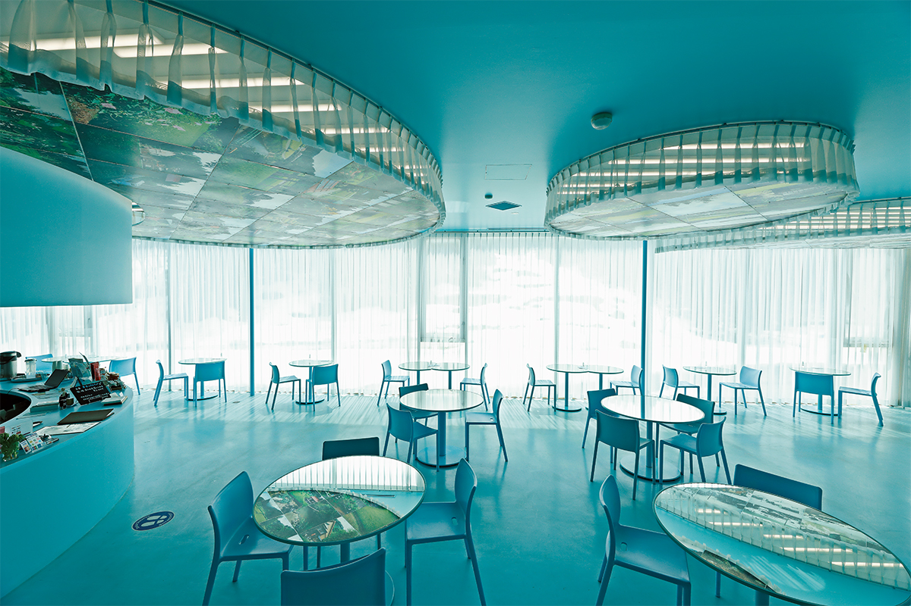
В Этиго-Цумари считают, что самое первое и простое выражение культуры это еда. Поэтому в краю фестиваля «Земля искусства» обедают прямо внутри произведений: в голубом кафе с зеркальными столами, в школьном классе под спектакль и в старом доме, обросшем керамикой.
Край
Мацудай: рисовые террасы и искусство
Этиго-Цумари на юге префектуры Ниигата известен как один из самых снежных районов мира. Деревни здесь пустели и старели, пока в 2000 году не прошёл первый фестиваль «Земля искусства» Этиго-Цумари, один из крупнейших международных арт-фестивалей. Восьмой фестиваль шёл с 29 апреля по 13 ноября 2022 года.
Мацудай, один из шести районов фестиваля, лежит в холмах вдоль притока реки Синано, со всех сторон окружённый горами. Среди деревенских пейзажей здесь стоят работы художников с мировым именем: «Рисовые террасы» Ильи и Эмилии Кабаковых, «Цветущий Цумари» Яёи Кусамы.
Еда для фестиваля не дополнение, а часть его идеи. Здесь говорят об «искусстве повседневной жизни», которое создаёт еда. Поэтому в краю фестиваля рестораны часто соединены с произведениями искусства.
Столовая
Разговор с хозяйкой тоже угощение
В Мацудай стоит арт-центр Нобутай, здание которого само по себе считается произведением искусства. В нём работает столовая «Этиго Мацудай сатояма сёкудо», где местную деревенскую кухню едят прямо внутри художественной работы.
Голубой зал называется «Кафе Рефле», это работа французского художника Жан-Люка Вильмута. «Рефле» значит «отражение». Художник раздал местным жителям фотоаппараты мгновенной печати, и снимки, которые они сделали из окон своих домов, отражаются в зеркальных столах. Пейзажи на них меняются вместе с временами года.
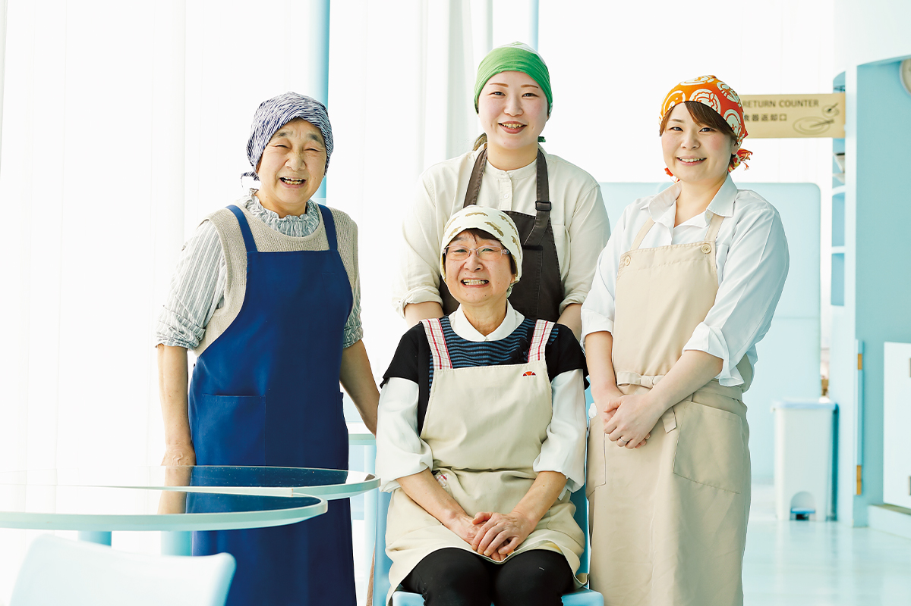
Готовят здесь местные хозяйки и женщины поколения их дочерей. Домашние блюда своего края они слегка осовременивают, но делают всё сами.
«Овощи нам приносят соседи-фермеры, а горные травы мы собираем рядом, в лесу и на полях. Видите, вон пробиваются жёлтые побеги белокопытника? Готовим и по семейным рецептам: например, в холода заквашиваем бобы с рисовым солодом кодзи и солью, получается «сёю-но ми», густая соевая приправа. Хочется, чтобы через эти блюда и виды из окна люди полюбили природу Цумари»
одна из хозяек столовой
Так она рассказывала, глядя на рисовые террасы прямо за окном. Кухня здесь передаётся от матери к дочери, и разговор с теми, кто живёт на этой земле, не меньшее угощение, чем сами блюда.
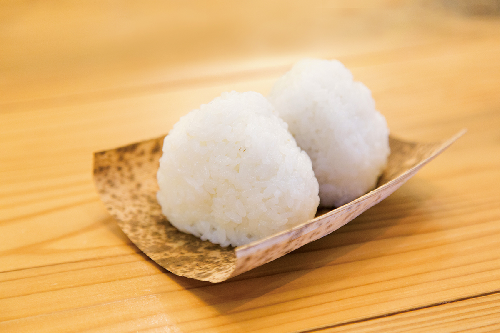
Шеф
Основа японского вкуса
Меню столовой курирует шеф Фумио Ёнэдзава. Он работал во многих известных ресторанах, в том числе шеф-поваром Jean-Georges Tokyo, а с 2015 года он официальный шеф фестиваля «Земля искусства».
«В городах это почти исчезло, но раньше в японских домах мамы и бабушки готовили каждый день то, что знали с детства, со вкусом своих корней. На такой кухне вырос японский вкус, и в Этиго-Цумари её основа ещё жива»
Фумио Ёнэдзава
Весной едят молодые побеги, летом получают влагу из овощей, а на зиму делают заготовки. У каждого способа есть причина, и шеф считает, что эту культуру нужно сохранить.
«Есть блюда, которые возможны только в Ниигате, а за ними стоит особая культура еды. Именно поэтому их вкус ничем не заменить, если пробовать их здесь, на месте»
Фумио Ёнэдзава
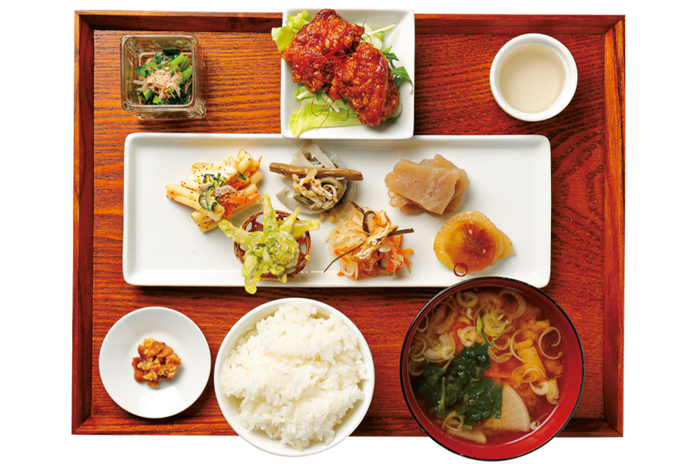
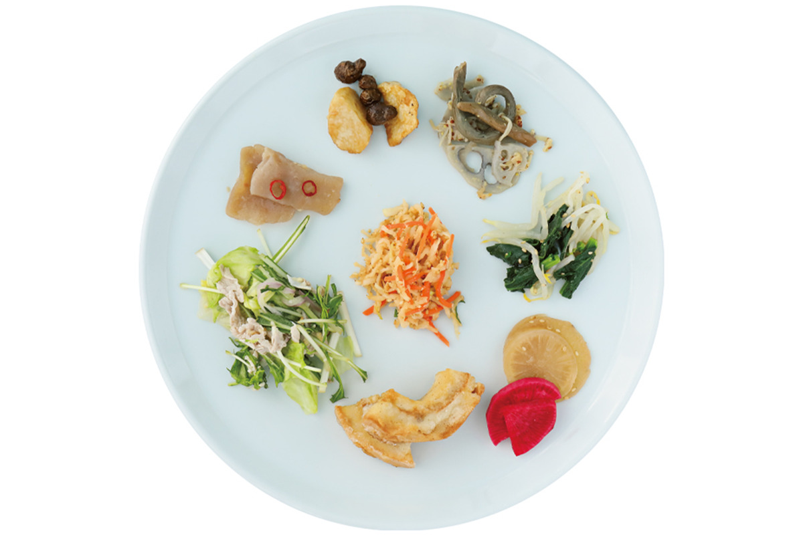
Фумио Ёнэдзава первым из японцев стал су-шефом в главном ресторане Jean-Georges в Нью-Йорке, отмеченном тремя звёздами. Вернувшись в Японию, он четыре года был шеф-поваром первого японского Jean-Georges, потом возглавлял кухню THE BURN, а в 2022 году основал компанию No Code.
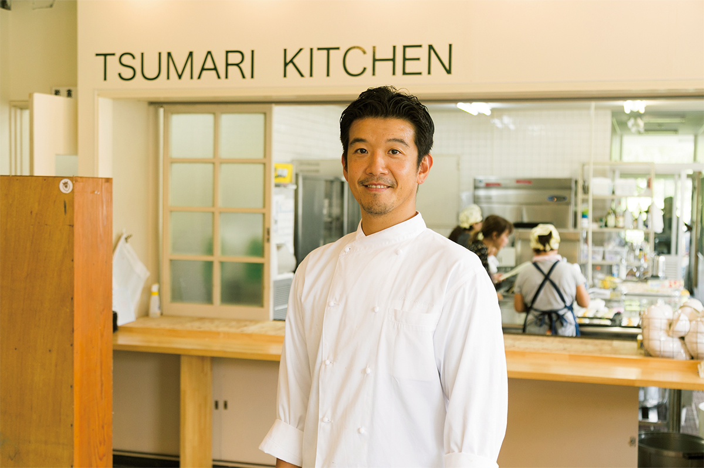
Во время фестиваля 2022 года он готовил и особые обеды в TSUMARI KITCHEN, столовой кампуса Нунагава в бывшей школе, где учат ценить край через сельское хозяйство и еду. Попасть туда можно было только с официальной экскурсией фестиваля.
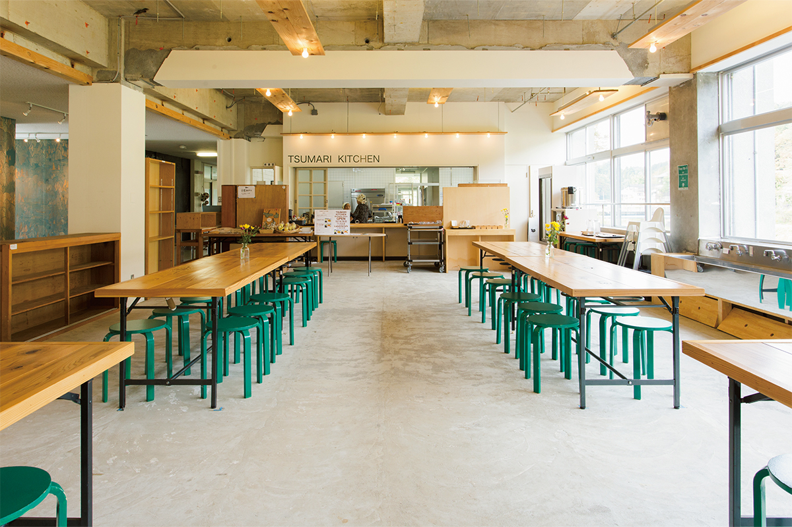
«Этиго Мацудай сатояма сёкудо»
- Адрес
- префектура Ниигата, Токамати, Мацудай, 3743-1, в арт-центре Нобутай
- Телефон
- +81 25-594-7181
- Часы работы
- 10:00–17:00 (последний заказ 16:30), с 30 июля по 4 сентября до 18:00 (последний заказ 17:00); обед 11:00–14:00
- Выходные
- вторник и среда (кроме праздников)
Театр
Обед под спектакль в бывшей школе
На юге Этиго-Цумари, в Цунане, закрытую среднюю школу Камиго превратили в арт-центр «Камиго Кроубу-дза». В бывших классах и кабинетах стоят художественные работы.
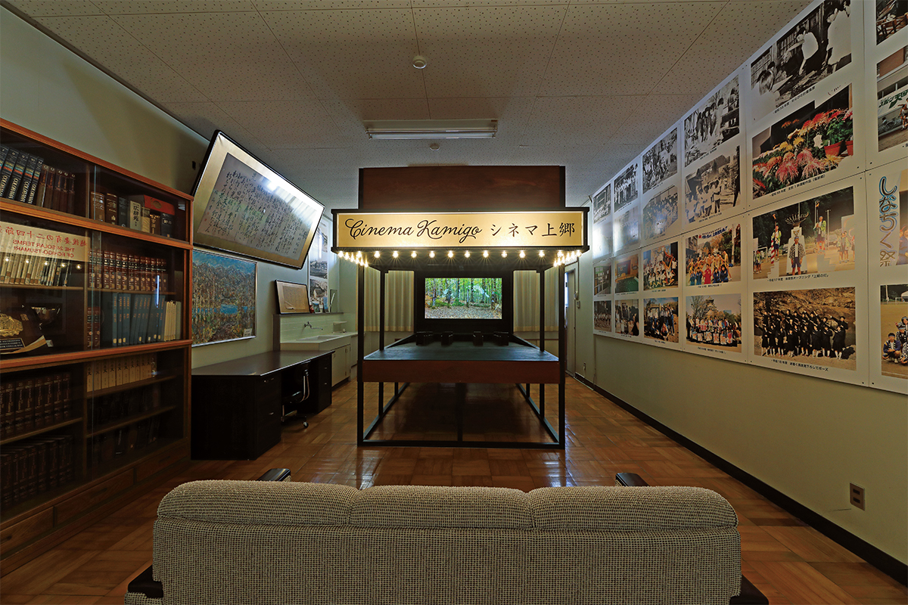
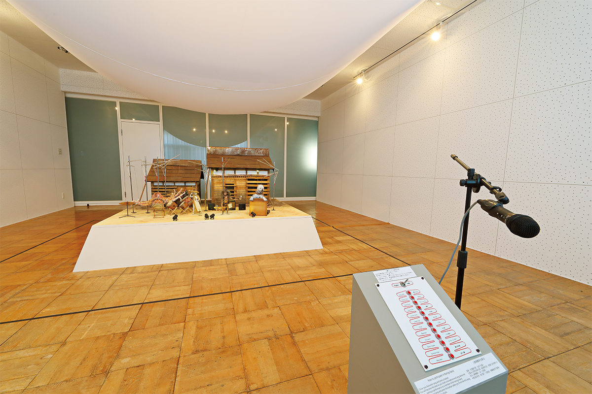
Главное здесь ресторан-спектакль художника EAT & ART TARO, который работает с темой еды. Местные хозяйки подают обед из нескольких блюд из здешних продуктов, и каждый год его сопровождает спектакль на новую тему.
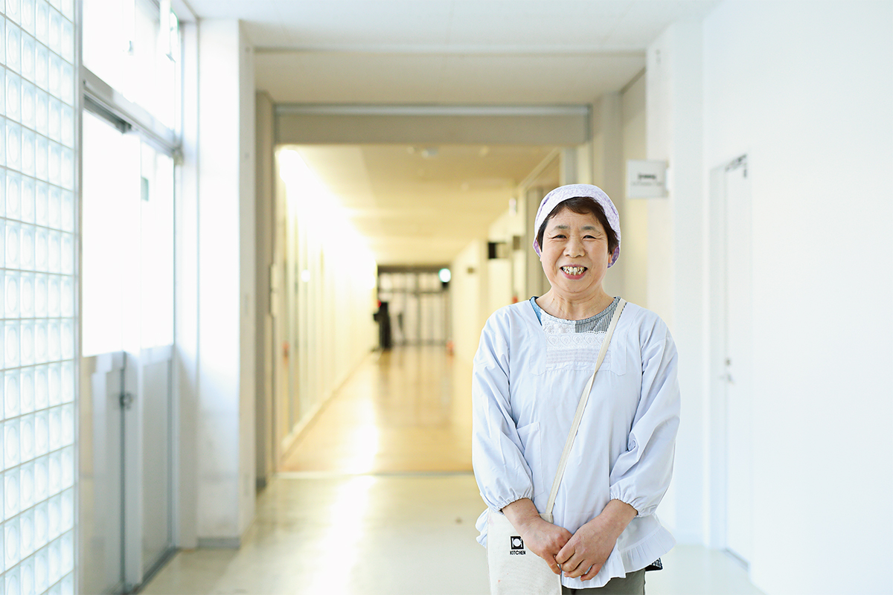
Ресторан «Камиго Кроубу-дза»
- Адрес
- префектура Ниигата, уезд Наканоуонума, Цунан, Камиго-Миянохара, 7-3
- Телефон
- +81 25-761-7767 (справочный центр фестиваля)
- Часы работы
- два представления, 12:00–12:45 и 13:30–14:15
- Даты
- с 30 июля по 4 сентября 2022 года
- Выходные
- вторник и среда
- Цены / Вход
- 2500 иен, только по предварительной записи; отдельно нужен паспорт фестиваля или билет в «Камиго Кроубу-дза»
Керамика
Обед на посуде местных гончаров
«Убусуна-но иэ» это крестьянский дом под соломенной крышей, построенный в 1924 году. Его вернули к жизни керамикой, и весь дом стал произведением искусства.
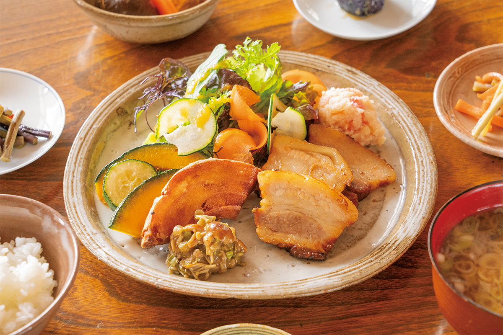
Обедают здесь домашней едой из местных продуктов: рис косихикари из Уонумы, сезонные горные травы, свинина Цумари. Подают всё на посуде здешних гончаров. Гостей больше всего притягивают женщины деревни: их весёлые улыбки и разговоры.
«Убусуна-но иэ»
- Адрес
- префектура Ниигата, Токамати, Хигаси-Симогуми, 3110
- Телефон
- +81 25-755-2291 (летом по предварительной записи)
- Часы работы
- 11:00–14:00 (последний заказ); работы можно смотреть до 16:00
- Даты
- до 13 ноября 2022 года
- Выходные
- весной и осенью с понедельника по пятницу; в остальное время вторник и среда (кроме праздников)
- Цены / Вход
- 500 иен, учащиеся средней школы и младше бесплатно, или по паспорту фестиваля
Фото: Норихито Судзуки, Аюми Янаги, Исаму Сакамото.